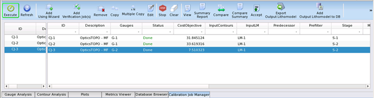
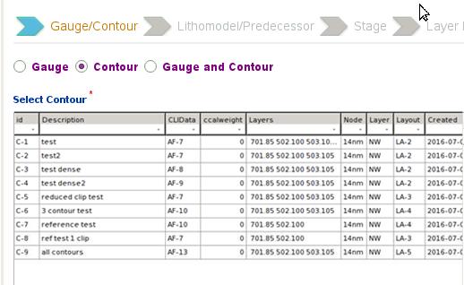

Calibration jobs
are the core of optimization for Calibre nmModelflow. You must set
up a calibration job in order to generate output.
Prerequisites
The database must contain
each of the following items:
Procedure
- Raise the Calibration
Job Manager tab in the main window.
Figure 1. Calibration Job Manager
(Create a Job)
- Click the Add Using
Wizard button.
- Fill out the wizard that appears.
On the initial screen, if you have contours in your database, you
can choose Contours (allowing you to skip the gauge selection steps)
or Gauges and Contours (allowing you to use both gauge and contours
during calibration). Otherwise, you must choose Gauges; click Next to
continue.
The components list appears
as shown in the following figure.
Tip Components
that are marked with a red asterisk are required. All other components
are optional and you can safely click Next without
adding any items from the list for that component.
- If you chose Gauges or Gauges
and Contours, select a gauge object from the gauges list, then click Next.
The gauge object you
select should correspond to the stage type you intend to calibrate
using this job:
Optical Model Calibration —
Select a set of planar feature gauges made up of horizontal, vertical,
and 2D features.
Topo Calibration —
The set of planar gauges and topo gauges (usually many more than
just the 2Rx and 3Rx features).
Resist Calibration —
The set of planar gauges and topo gauges.
Verification Job —
A subset of the planar and topo gauges.
- If you
chose Contours or Gauges and Contour, select a contour file, then
click Next.

- Choose between two options
from the selection screen:
Litho Model from Database —
Displays a list to select a litho model from those available in
the database, followed by a wizard to assign mask layers described
in the litho model to layers in the layout.
Note: If you are creating a job for a litho model that contains
a topo model, and the topo model has no FinFET signals, do not map
the FinFET layers in the design file.
Result of a Calibration Job —
Displays the Job list to select the output of another calibration
job as input, in place of a litho model in the database. This option
cannot be selected if there are no other calibration jobs defined.
- Select a Stage from the list
of previously-defined stages.
Note: For topo model
contour verification, choose a stage that has simulation only.
If you do not have any stages
in the list, you can click Add to create
one.
- Select
a run command type from the dropdown list. A full list of builtin
runscripts is available by clicking the “?” button to access the
online help.
- (Optional) Add one or more
filters to the job. You would do this to reduce the number of gauges
that need to be calibrated, limiting the gauges to test patterns
of interest.
- (Optional) Add one or more
metrics to the job. You would do this to assess the quality of the
results by more than just the cost objective.
- (Optional) Add one or more
plot groups to the job.
- On the Summary screen, add
a description of the job, then click OK.
Results
The new job appears in the Calibration
Job Manager list in the main window. Continue to the next task,
“Running a Topo Calibration Job.”
Tip If you need to change the parameters
of a job, double-click on its ID. When the Attributes viewer appears
for the job, click the Edit button. Clicking
on a field puts the cursor there for editable text fields, or brings
up a choice list for items in the database. However, only jobs in
the Initial state can be edited.